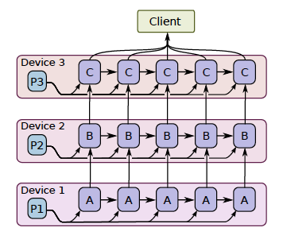
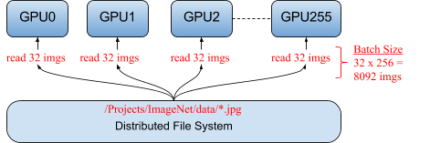
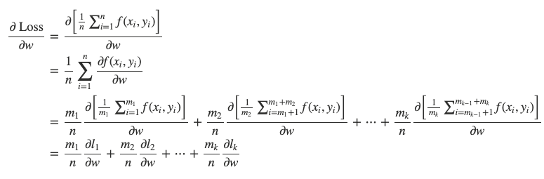
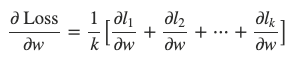
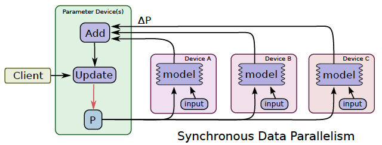
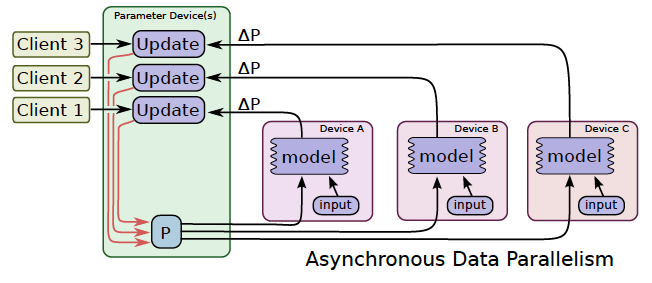
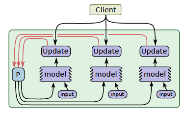

Overview
- Parallelism
- Model parallelism
- Data parallelism
- Synchronous vs asynchronous training
- TensorFlow Strategy
- Model Computation Pipelining
- Graph optimization with Grappler
- Pruning optimizer
- Constant folding optimizer
- Layout optimizer
- Memory optimizer
- Autoparallel optimizer
- Arithmetic optimizer
- Remapper optimizer
- Loop optimizer
- Dependency Optimizer
- others:
- Function optimizer
- Shape optimizer
- Scoped allocator optimizer
- Distributed architecture (unfinished)
- Parameter server
- Ring-allreduce
- Horovod
1 Parallelism
TensorFlow’s basic dataflow graph model can be used in a variety of ways for machine learning applications. However, some neural networks models are so large they cannot fit in memory of a single device (GPU). Google’s Neural Machine Translation system is an example of such a network.
Such models need to be split over many devices, carrying out the training in parallel on the devices. There are three method to train a model in parallel on the devices, Model parallelism, Data parallelism, and Model Computation Pipelining.
Model parallelism uses same data for every device but partitions the model among the devices. The graph is split as several sub-graphs, and assigns these sub-graphs to feasible devices to training. All devices use a same mini-batch to train.
Data parallelism uses the same model for every device, but train the model in each device using different training samples. Each device holds a entire model, but trains with partial samples from the mini-batch.
Model Computation Pipelining pipelines the computation of seveal same models within one device by running a small number of concurrent steps.
1.1 Model parallelism
Model parallel training, where different portions of the model computation are done on different computational devices simultaneously for the same batch of examples, as the following figure:

It is challenging to get good performance, because some layers may depend on previous layers which leads to a long waiting time. However, if a model has some components which can run in parallel, it can use this method to improve the efficiency.
1.2 Data parallelism
In modern deep learning, because the dataset is too big to be fit into the memory, we could only do stochastic gradient descent(SGD) for batches. The shortcoming of SGD is that the estimate of the gradients might not accurately represent the true gradients of using the full dataset. Therefore, it may take much longer to converge.
Data parallelism is a simple technique for speeding up SGD is to parallelize the computation of the gradient for a mini-batch across devices.
Each device will independently compute the loss the gradients of small batches, the final estimate of the gradients is the weighted average of the gradients calculated from all the small batches(require communication).
By using data parallelism, the model can train on a large batch size. For example, the folloing figure shows a typical data parallelism, distributing 32 different images to each of the 256 GPUs running a single model. Together, the total mini-batch size for an iteration is 8,092 images (32 x 256) (Facebook: Training ImageNet in 1 Hour).

Mathematically, data parallelism is valid because:

* m1+m2+⋯+mk=n.
When m1=m2=⋯=mk=nk, we could further have:

1.2.1 Synchronous vs asynchronous training
In synchronous training(as following figure), all of the devices train their local model using different parts of data from a single (large) mini-batch. They then communicate their locally calculated gradients (directly or indirectly) to all devices.
Only after all devices have successfully computed and sent their gradients is the model updated. The updated model is then sent to all nodes along with splits from the next mini-batch. That is, devices train on non-overlapping splits (subset) of the mini-batch.

In asynchronous training, no device waits for updates to the model from any other device. The devices can run independently and share results as peers, or communicate through one or more central servers known as “parameter” servers.

In synchronous training, the parameter servers compute the latest up-to-date version of the model, and send it back to devices. In asynchronous training, parameter servers send gradients to devices that locally compute the new model.
1.2.2 TensorFlow Strategy
tf.distribute.Strategy is a TensorFlow API to distribute training across multiple GPUs, multiple machines or TPUs. Using this API.
It intends to cover a number of use cases along different axes, including:
- synchronous vs asynchronous training,
- hardware platform(multiple GPUs on one machine, or multiple machines in a network, or on Cloud TPUs).
MirroredStrategy
tf.distribute.MirroredStrategy supports synchronous distributed training on multiple GPUs on one machine.
It creates one replica per GPU device. During training, one mini-batch is split into N parts and each part feed to one GPU device.
Efficient all-reduce algorithms are used to communicate the variable updates across the devices. By default, it uses NVIDIA NCCL as the all-reduce implementation. Currently, tf.distribute.HierarchicalCopyAllReduce and tf.distribute.ReductionToOneDevice are two options other than tf.distribute.NcclAllReduce which is the default.
CentralStorageStrategy
tf.distribute.experimental.CentralStorageStrategy does synchronous training as well. Variables are not mirrored, instead they are placed on the CPU and operations are replicated across all local GPUs. If there is only one GPU, all variables and operations will be placed on that GPU.
MultiWorkerMirroredStrategy
tf.distribute.experimental.MultiWorkerMirroredStrategy is very similar to MirroredStrategy. It implements synchronous distributed training across multiple workers, each with potentially multiple GPUs. Similar to MirroredStrategy, it creates copies of all variables in the model on each device across all workers.
It uses CollectiveOps as the multi-worker all-reduce communication method used to keep variables in sync.
A collective op is a single op in the TensorFlow graph which can automatically choose an all-reduce algorithm in the TensorFlow runtime according to hardware, network topology and tensor sizes.
MultiWorkerMirroredStrategy currently allows two different implementations of collective ops：
- CollectiveCommunication.RING, ring algorithms for all-reduce and all-gather.
- CollectiveCommunication.NCCL, ncclAllReduce for all-reduce, and ring algorithms for all-gather.
TPUStrategy
tf.distribute.experimental.TPUStrategy lets you run your TensorFlow training on Tensor Processing Units (TPUs).
ParameterServerStrategy
tf.distribute.experimental.ParameterServerStrategy supports parameter servers training on multiple machines. In this setup, some machines are designated as workers and some as parameter servers. Each variable of the model is placed on one parameter server. Computation is replicated across all GPUs of all the workers.
OneDeviceStrategy
tf.distribute.OneDeviceStrategy runs on a single device. This strategy will place any variables created in its scope on the specified device. Input distributed through this strategy will be prefetched to the specified device.
You can use this strategy to test your code before switching to other strategies which actually distributes to multiple devices/machines.
1.3 Model Computation Pipelining
Another common way to get better utilization for training deep neural networks is to pipeline the computation of the model within the same devices, by running a small number of concurrent steps within the same set of devices.
It is somewhat similar to asynchronous data parallelism, except that the parallelism occurs within the same device(s), rather than replicating the computation graph on different devices.

This allows “filling in the gaps” where computation of a single batch of examples might not be able to fully utilize the full parallelism on all devices at all times during a single step.
2 Graph optimization with Grappler
Graph is the default graph optimization system in the TF runtime.
Reference
- https://www.oreilly.com/content/distributed-tensorflow/
- https://www.tensorflow.org/guide/distributed_training
- https://www.tensorflow.org/guide/graph_optimization
- https://web.stanford.edu/class/cs245/slides/TFGraphOptimizationsStanford.pdf
- Abadi, M., Agarwal, A., Barham, P., Brevdo, E., Chen, Z., Citro, C., … & Ghemawat, S. (2016). Tensorflow: Large-scale machine learning on heterogeneous distributed systems. arXiv preprint arXiv:1603.04467.
- Sergeev, A., & Del Balso, M. (2018). Horovod: fast and easy distributed deep learning in TensorFlow. arXiv preprint arXiv:1802.05799.
- Abadi, M., Barham, P., Chen, J., Chen, Z., Davis, A., Dean, J., … & Kudlur, M. (2016). Tensorflow: A system for large-scale machine learning. In 12th {USENIX} Symposium on Operating Systems Design and Implementation ({OSDI} 16) (pp. 265-283).
- Mirhoseini, A., Pham, H., Le, Q. V., Steiner, B., Larsen, R., Zhou, Y., … & Dean, J. (2017, August). Device placement optimization with reinforcement learning. In Proceedings of the 34th International Conference on Machine Learning-Volume 70 (pp. 2430-2439). JMLR. org.
- https://leimao.github.io/blog/Data-Parallelism-vs-Model-Paralelism/
- Goyal, P., Dollár, P., Girshick, R., Noordhuis, P., Wesolowski, L., Kyrola, A., … & He, K. (2017). Accurate, large minibatch sgd: Training imagenet in 1 hour. arXiv preprint arXiv:1706.02677.